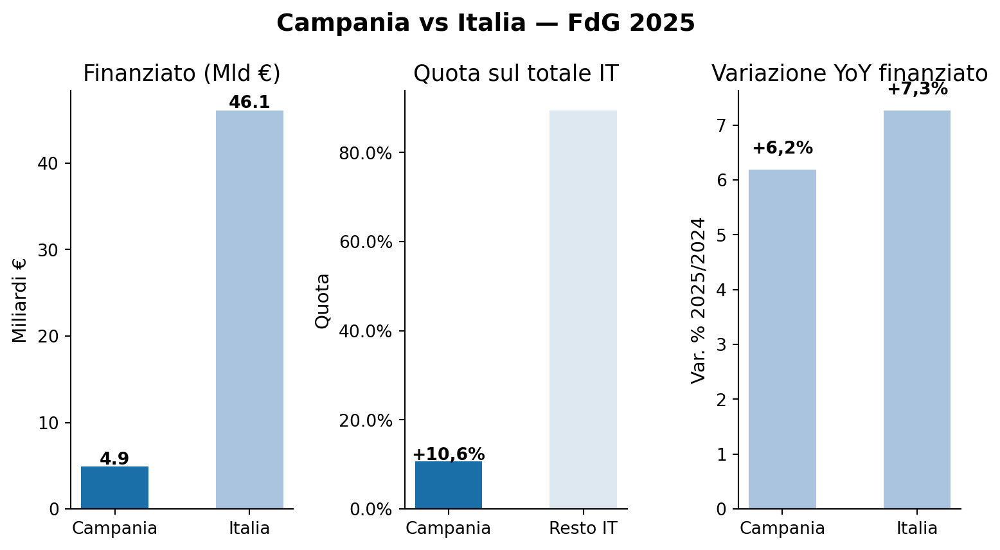
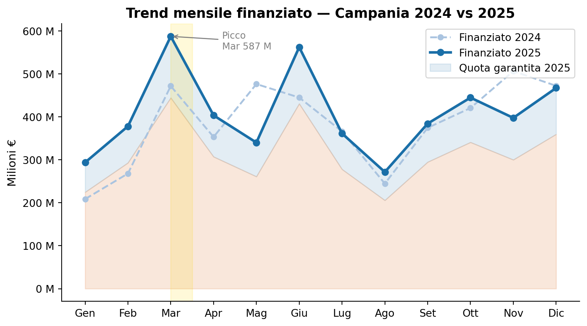
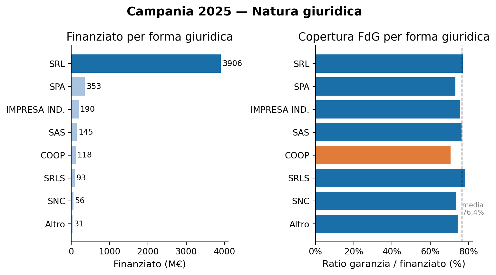
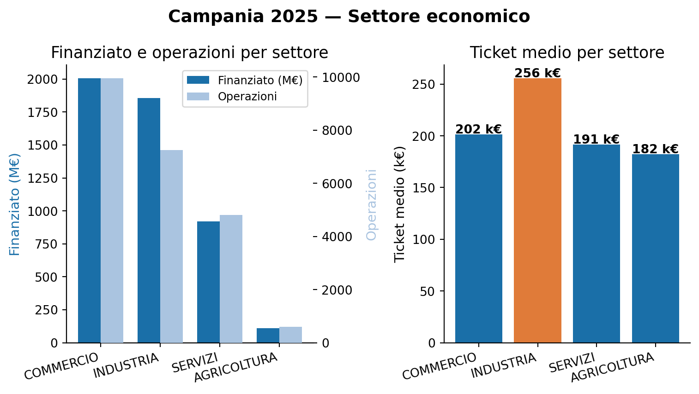
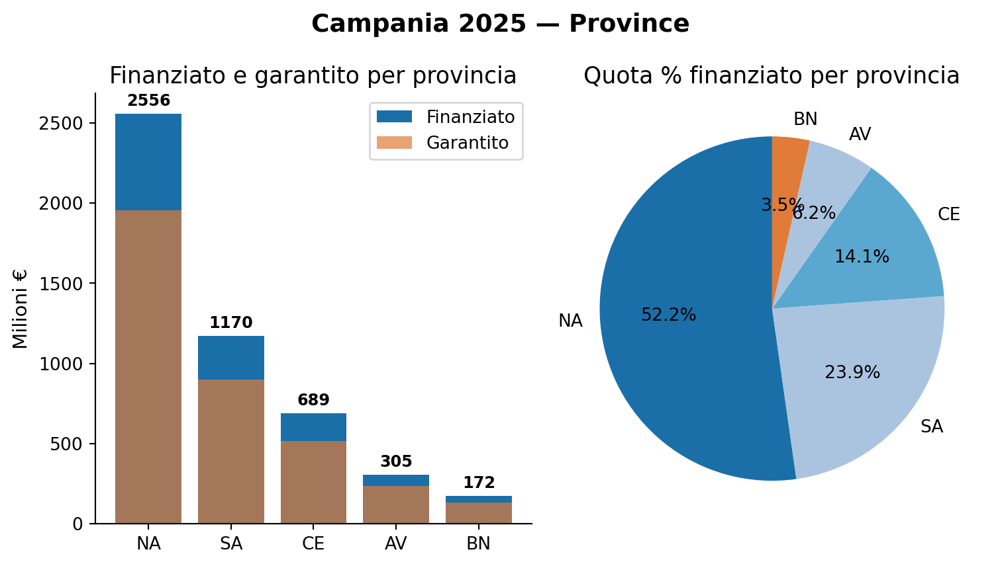
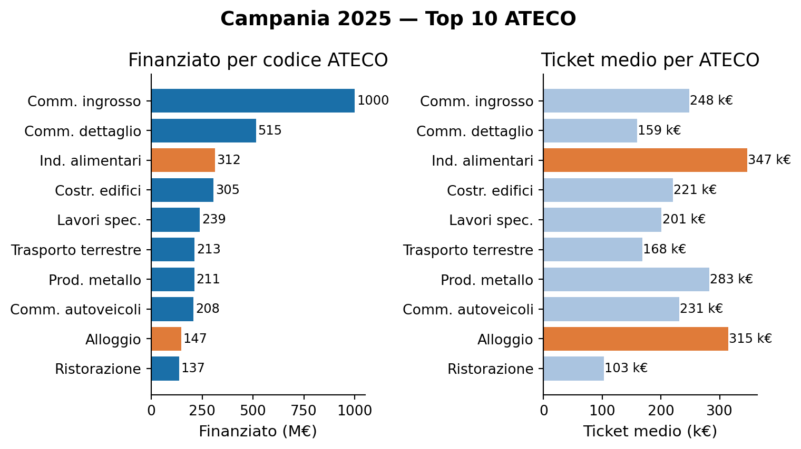

Fondo di Garanzia — Campania 2025
Analisi operazioni per provincia, settore e natura giuridica
Paolo Volterra ![]()
Fondo di Garanzia, Campania, credito, garanzia pubblica, PMI
1 1. Campania vs Italia

Figura 1: Sicilia vs Italia — FdG 2025
| Campania | Italia | |
|---|---|---|
| Operazioni | 22.620 | 247.808 |
| Finanziato (M€) | 4.891,8 | 46.068,8 |
| Garantito (M€) | 3.739,3 | 31.940,8 |
| Quota su Italia | +10,6% | 100% |
| Var. YoY finanziato | +6,2% | +7,3% |
| Ticket medio (k€) | 216 | 20 |
La Campania è la prima regione del Mezzogiorno per volume assoluto di finanziato FdG: 4,9 Mld€, pari al 10,6% del totale nazionale — quota superiore al peso demografico (~9,4%). La crescita YoY (+6,2%) è tuttavia inferiore alla media nazionale (+7,3%), inversione di tendenza rispetto al 2024 quando la Campania aveva trainato la crescita del Mezzogiorno. Il ticket medio (216 k€), ben superiore alla media italiana (186 k€), riflette un mix spostato verso operazioni medio-grandi nell’industria alimentare, nella manifattura e nella grande distribuzione organizzata dell’area metropolitana napoletana.
2 2. Trend mensile 2025

Figura 2: Trend mensile finanziato — Sicilia 2024 vs 2025
| Mese | Finanziato 2025 (M€) | Garantito 2025 (M€) | Δ vs 2024 |
|---|---|---|---|
| Gen | 293,8 | 224,6 | +40,9% |
| Feb | 378,1 | 293,0 | +41,1% |
| Mar | 587,3 | 444,3 | +24,5% |
| Apr | 403,5 | 307,2 | +14,3% |
| Mag | 340,1 | 261,0 | -28,6% |
| Giu | 562,3 | 430,6 | +26,4% |
| Lug | 361,3 | 277,9 | -1,3% |
| Ago | 271,6 | 205,7 | +11,0% |
| Set | 384,3 | 294,8 | +2,6% |
| Ott | 444,7 | 340,8 | +5,8% |
| Nov | 397,6 | 300,0 | -21,5% |
| Dic | 467,2 | 359,5 | -1,1% |
Il 2025 campano è dominato dall’effetto di base: gennaio (+40,8%) e febbraio (+41,1%) crescono molto perché il 2024 partiva da livelli bassi, mentre i mesi in cui il 2024 era stato eccezionalmente forte generano contrazioni — maggio (−28,6%, 2024 aveva toccato 476 M€) e novembre (−21,5%, 2024 a 506 M€). Marzo è il picco assoluto (587,3 M€), il più alto valore mensile tra le grandi regioni del Mezzogiorno, riflettendo la concentrazione delle pratiche di fine trimestre. Il saldo annuo (+6,2%) è inferiore al tasso nazionale, poiché il 2024 campano era già sovraperformante.
3 3. Natura giuridica

Figura 3: Sicilia 2025 — Natura giuridica
| Forma giuridica | Operazioni | Finanziato (M€) | Garantito (M€) | Ratio gar/fin |
|---|---|---|---|---|
| SRL | 15.398 | 3.905.7 | 3.006.5 | 77.0% |
| SPA | 499 | 353.4 | 258.3 | 73.1% |
| IMPRESA IND. | 2.917 | 190.2 | 144.0 | 75.7% |
| SAS | 1.058 | 144.8 | 110.4 | 76.3% |
| COOP | 516 | 117.9 | 83.3 | 70.6% |
| SRLS | 1.572 | 92.7 | 72.5 | 78.2% |
| SNC | 396 | 56.4 | 41.6 | 73.7% |
| Altro | 264 | 30.7 | — | — |
| Totale | 22.620 | 4.891.8 | 3.739.3 | 76.4% |
Le SRL dominano con il 68% delle operazioni e il 80% del finanziato — la quota più alta tra le grandi regioni meridionali, segno di un tessuto produttivo mediamente più strutturato nella forma societaria. Il dato più anomalo è la seconda posizione delle SPA (353,4 M€ con soli 499 soggetti, ticket implicito 708 k€), tipico della grande industria campana (petrolchimica, farmaceutica, agroalimentare corporate) e delle medie imprese del casertano e salernitano. Le cooperative registrano il ratio garanzia/finanziato più basso (70,6%), per l’utilizzo parallelo di strumenti mutualistici regionali. Le SRLS presentano il ratio più alto (78,2%): imprese giovani con scarsa patrimonializzazione e massimo ricorso alla garanzia pubblica.
4 4. Settore economico

Figura 4: Sicilia 2025 — Settore economico
| Settore | Operazioni | Finanziato (M€) | Garantito (M€) | Ticket medio (k€) | Ratio gar/fin |
|---|---|---|---|---|---|
| COMMERCIO | 9.957 | 2.006.8 | 1.533.6 | 202 | 76.4% |
| INDUSTRIA | 7.251 | 1.854.2 | 1.422.7 | 256 | 76.7% |
| SERVIZI | 4.812 | 921.5 | 714.7 | 191 | 77.6% |
| AGRICOLTURA | 600 | 109.3 | 68.3 | 182 | 62.5% |
Il commercio guida per numero di operazioni (44%) e per finanziato (41%), trainato dalla densità distributiva dell’area metropolitana napoletana e dalla GDO campana. L’industria esprime il ticket più alto (256 k€) grazie a manifattura farmaceutica, agroalimentare industriale (mozzarella di bufala, conserve pomodoro, pasta) e meccanica. Significativo l’agricoltura con soli 600 operazioni (2,6% del totale) ma ticket medio di 182 k€ — il più alto tra le grandi regioni meridionali per il settore agricolo: operazioni concentrate in imprese medio-grandi di trasformazione. Il ratio garanzia/finanziato dell’agricoltura (62,5%) è il più basso per l’affiancamento di ISMEA e PSR FEASR.
5 5. Province

Figura 5: Sicilia 2025 — Province
| Provincia | Finanziato (M€) | Garantito (M€) | Operazioni | Ticket medio (k€) |
|---|---|---|---|---|
| NA | 2.555.9 | 1.955.9 | 11.426 | 224 |
| SA | 1.169.9 | 900.6 | 5.626 | 208 |
| CE | 688.8 | 517.3 | 3.132 | 220 |
| AV | 305.0 | 234.6 | 1.455 | 210 |
| BN | 172.3 | 130.9 | 981 | 176 |
Napoli esercita una concentrazione senza equivalenti tra le province italiane: 52% del finanziato regionale con 11.426 operazioni. L’area metropolitana napoletana assorbe capitali per manifattura, retail, servizi e GDO in misura che riflette la sua massa critica. Salerno (1.169,9 M€, 24%) è la seconda provincia più dinamica del Mezzogiorno: mozzarella di bufala DOP nella Piana del Sele, industria meccanica e porto commerciale la collocano ben oltre il peso demografico. Caserta (688,8 M€) esprime il distretto tessile-abbigliamento e l’agroalimentare della Terra di Lavoro. Avellino e Benevento, province appenniniche, presentano i volumi più contenuti ma mantengono un’alta intensità pro-capite grazie all’enologia (Taurasi DOCG, Fiano, Greco, Falanghina) e all’industria casearia.
6 6. Top 10 settori ATECO

Figura 6: Sicilia 2025 — Top 10 ATECO
| ATECO | Descrizione | Finanziato (M€) | Operazioni | Ticket medio (k€) |
|---|---|---|---|---|
| 46 | Comm. ingrosso | 1.000.3 | 4.034 | 248 |
| 47 | Comm. dettaglio | 514.6 | 3.230 | 159 |
| 10 | Ind. alimentari | 312.5 | 901 | 347 |
| 41 | Costr. edifici | 305.0 | 1.382 | 221 |
| 43 | Lavori spec. | 238.6 | 1.186 | 201 |
| 49 | Trasporto terrestre | 212.7 | 1.265 | 168 |
| 25 | Prod. metallo | 211.1 | 747 | 283 |
| 45 | Comm. autoveicoli | 208.0 | 901 | 231 |
| 55 | Alloggio | 147.3 | 468 | 315 |
| 56 | Ristorazione | 136.7 | 1.324 | 103 |
Il commercio all’ingrosso (ATECO 46) supera il miliardo di euro (1.000,3 M€) — il valore più alto in assoluto tra tutte le regioni italiane — sostenuto dai mercati agroalimentari di Napoli (il più grande del Mezzogiorno), dal polo logistico di Nola e dalle reti distributive che servono l’area metropolitana. L’industria alimentare (ATECO 10) esprime il ticket medio più alto (347 k€): mozzarella di bufala DOP, pomodoro San Marzano DOP, conserve ittiche salernitane e pasta di Gragnano IGP richiedono investimenti industriali di scala. L’alloggio (ATECO 55) con 315 k€ di ticket riflette la ristrutturazione delle strutture ricettive lungo la costiera amalfitana, sorrentina e nelle isole (Ischia, Capri, Procida). Prodotti in metallo (283 k€) e commercio autoveicoli (231 k€) completano un profilo manifatturiero più diversificato rispetto alle altre regioni del Mezzogiorno.